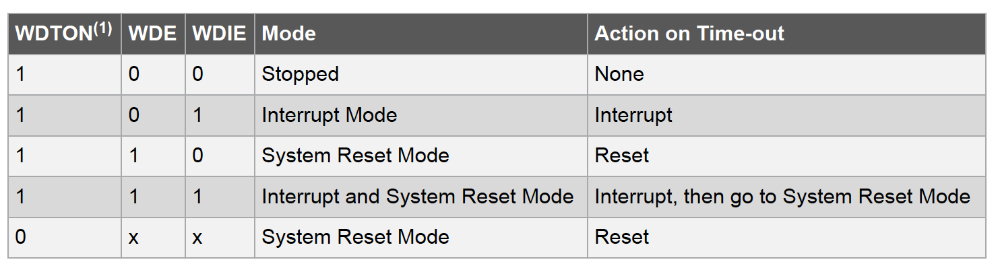

Introduction to watchdog
Watchdog is an independent timer module that uses an independent clock source. It can reset or interrupt the MCU. The watchdog is useful to avoid unknown bugs. Suppose the program goes to an infinite loop, it can clear the watchdog's timer value, then the system can be reset.
The watchdog in Atmega328p can works in 3 different mode, interrupt, system reset, interrupt and system reset. It is clocked by the internal 128KHz oscillator. If the watchdog timer is enabled, it would work in all sleep mode, and consume a significant part of power. So disabling this module when it is unnecessary. The working mode and en/disable is controlled by a fuse bit (High fuse bit.WDTON) and the Watchdog Timer Control Register (WDTCSR). The following picture shows the selection of different modes [1].
